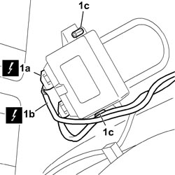

5580H10 PARKING OBSTACLE DETECTION DEVICE ELECTRONIC CONTROL UNIT - R.R.
- Path
- Procedures > 55 ELECTRICAL EQUIPMENT > 5580 SPECIAL ACCESSORIES > 5580H PARKING OBSTACLE DETECTION DEVICE > 5580H10 PARKING OBSTACLE DETECTION DEVICE ELECTRONIC CONTROL UNIT - R.R.
- Kind
- repair procedure (removal / refitting; the operation number is the code)
- Applies to
- all engines; all production periods
- Interactive page
- https://sloeber94.github.io/elrnDB-fCrm/en/#/194000821
Applies to: all engines; all production periods
 Removing
Removing
 Refitting
Refitting- Turn the ignition key to the OFF position.
- Disconnect the negative battery terminal.
Description | Connector | |
|---|---|---|
BATTERY |
- Working from the rear of the vehicle, proceed as follows:
- Lower the rear seat backrest.
- Open the rear tailgate.
Op. 7040B26 LOAD PLATFORM COVER BLIND - R+R
Op. 7040B42 PROTECTION GRILLE FOR ANIMAL TRANSPORT - R and R
Op. 7040B10 LOAD PLATFORM (LUGGAGE PLATFORM) TRIM - R+R
Op. 7040B22 LUGGAGE COMPARTMENT/LOAD PLATFORM MOULDING - R+R
Op. 7040G46 LOAD COMPARTMENT COURTESY LIGHT - R and R
Op. 7040B24 LOAD COMPARTMENT TOP TRIM (ONE) - R+R
Op. 7040B18 LOAD COMPARTMENT LOAD PLATFORM SIDE TRIM ONE LH OR RH - R.R
1. Disconnect electrical connections (1a) and (1b), unscrew bolts (1c) and remove the parking obstacle detection device control unit from the vehicle.
Description | Connector | |
|---|---|---|
1a | PARKING SENSOR CONTROL UNIT |
Description | Connector | |
|---|---|---|
1b | PARKING SENSOR CONTROL UNIT |

Applies to: all engines; all production periods
Refitting
Removing- Check that the control unit is not damaged.
- Position the control unit in the housing and tighten the fixing bolts.
- Connect the electrical connections.
Description | Connector | |
|---|---|---|
PARKING SENSOR CONTROL UNIT |
Op. 7040B18 LOAD COMPARTMENT LOAD PLATFORM SIDE TRIM ONE LH OR RH - R.R
Op. 7040B24 LOAD COMPARTMENT TOP TRIM (ONE) - R+R
Op. 7040G46 LOAD COMPARTMENT COURTESY LIGHT - R and R
Op. 7040B22 LUGGAGE COMPARTMENT/LOAD PLATFORM MOULDING - R+R
Op. 7040B10 LOAD PLATFORM (LUGGAGE PLATFORM) TRIM - R+R
Op. 7040B42 PROTECTION GRILLE FOR ANIMAL TRANSPORT - R and R
Op. 7040B26 LOAD PLATFORM COVER BLIND - R+R
- Working from the rear of the vehicle, restore the position of the rear seat backrest.
- Connect the negative battery terminal.
Description | Connector | |
|---|---|---|
BATTERY |
- Re-close the tailgate and test the operation of the parking sensor system.
Topics linked from this page (9)
- 7040B10 LOAD PLATFORM (LUGGAGE PLATFORM) TRIM - R+R
- 7040B18 LOAD COMPARTMENT LOAD PLATFORM SIDE TRIM ONE LH OR RH - R.R
- 7040B22 LUGGAGE COMPARTMENT/LOAD PLATFORM MOULDING - R+R
- 7040B24 LOAD COMPARTMENT TOP TRIM (ONE) - R+R
- 7040B26 LOAD PLATFORM COVER BLIND - R+R
- 7040B42 <x>PROTECTION GRILLE FOR ANIMAL TRANSPORT - R&R</x>
- 7040G46 <x>LOAD COMPARTMENT COURTESY LIGHT - R&R</x>
- A001 BATTERY
- M084 PARKING SENSOR CONTROL UNIT